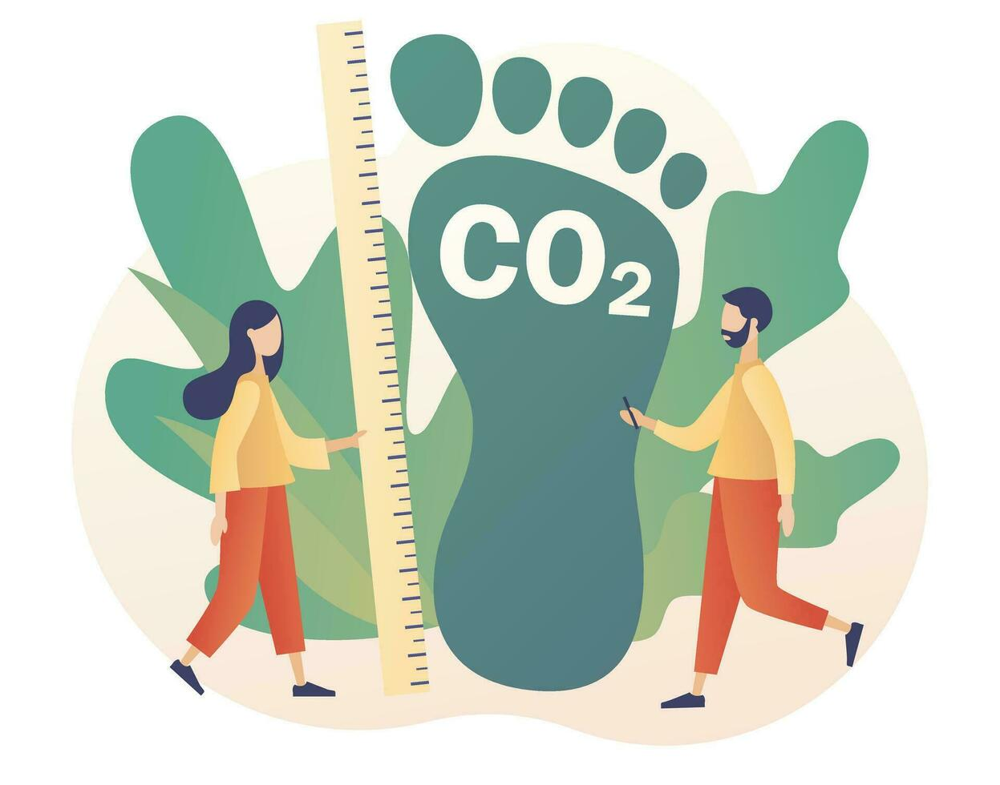

BERP – Best Emission Reduction Platform
BERP is a blockchain-based platform for the voluntary carbon market, where investors, project developers, communities and verifiers jointly decide on climate projects.
The goal: full transparency, no double counting of emission reductions, and real participation of local communities.
What problem does BERP solve?
- Opaque money flows: buyers often do not see where their money goes and which communities really benefit.
- Manipulable information & double counting: CO₂ reductions can be sold multiple times or poorly documented.
- No verified identities: project developers and investors are often weakly verified.
- Communities without a voice: people on the ground usually have little influence on which projects are implemented.
How BERP addresses this
Self-Sovereign Identity (SSI)
Investors, project developers, verifiers and communities receive verifiable, decentralized identities. Only verified actors can create projects or invest.
Smart contracts & on-chain tracking
Smart contracts manage projects, approvals and payouts. All money flows are transparent and traceable on-chain, helping to avoid double counting.
Community participation
Communities participate in the selection of projects. This ensures funding for projects that really matter locally.
How BERP works – technical view
1. Identities & Credentials
In an SSI environment, identities are created and verifiable credentials are issued (e.g. for companies, project developers, verifiers and communities). Large documents stay off-chain, and only their hashes are stored on the blockchain.
2. ProjectRegistry & FundingPool
The ProjectRegistry smart contract manages projects: status, IPFS hash, SSI reference, and required verifier approvals. The FundingPool smart contract collects investor deposits and distributes funds periodically to published projects.
3. On-chain & off-chain storage
Documents such as PDDs or monitoring reports live in IPFS or another off-chain storage. On-chain, you mainly see:
- Document hashes
- Project status & approvals
- Transactions & certificate references
CO₂ impact with CarbonFairCredits (CFC)
On BERP, CO₂ reductions are represented as CarbonFairCredits (CFC): 1 CFC = 100 kg of verified CO₂ reduction. This finer granularity allows even smaller companies to invest in high-quality projects.
A typical investment might be allocated as follows:
- 85% directly to projects
- 10.5% to the DAO treasury (operation & development)
- 3% to verifiers
- 1.5% to a community fund

Illustrative graphic: linking CO₂ reduction, community impact and transparent funding flows.
Stakeholders on BERP
Investors
Purchase CFC tokens, receive certificates and transparently compensate their carbon footprint.
Project Developers
Design CO₂ reduction projects, upload documentation and request verification.
Verifiers
Audit projects and identities (e.g. Big 4, carbon registries) and record their approvals on-chain.
Communities
Are represented by delegates, contribute voting results and influence which projects are funded.